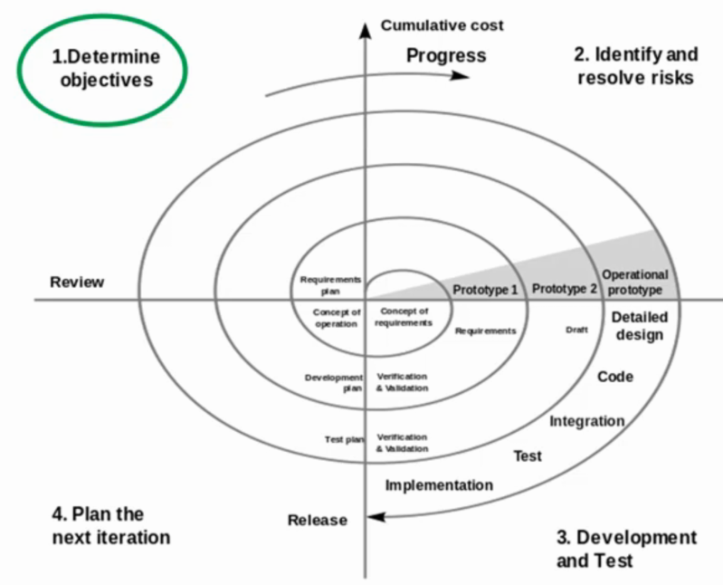
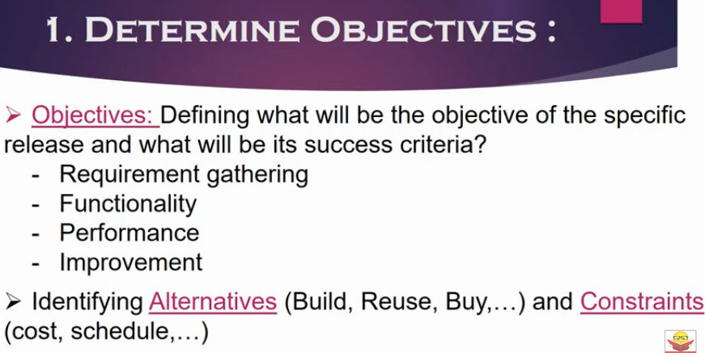
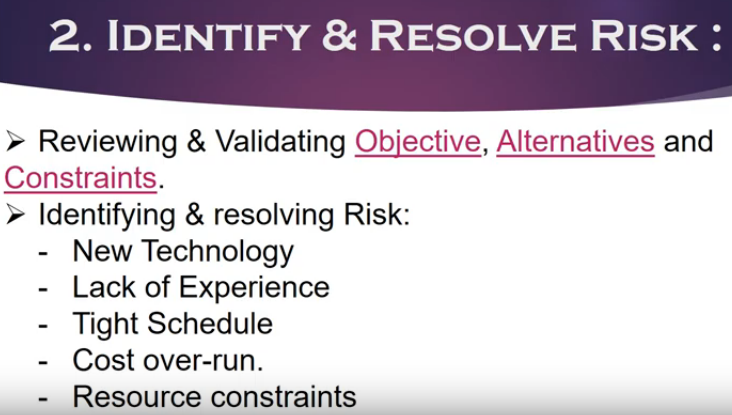
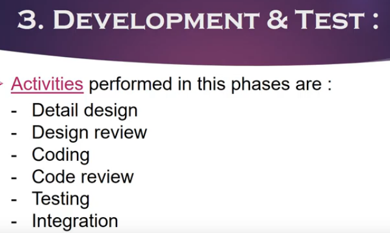
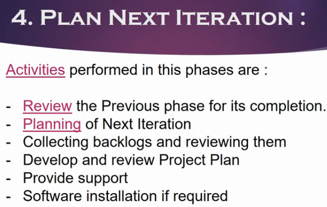
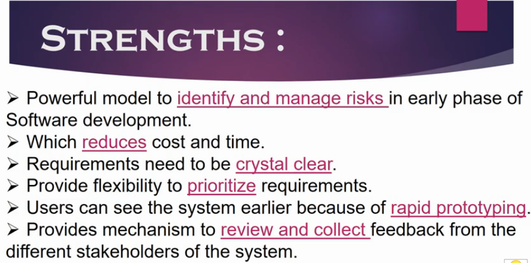
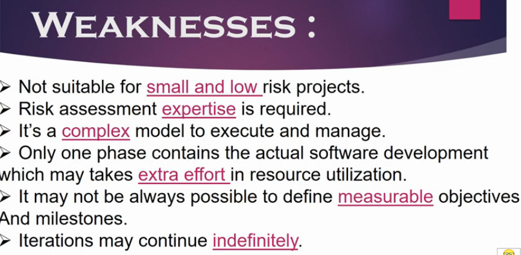

Spiral Model
Its Risk driven software development model
It's an incremental mode.
In incremental model idea is to first implement the partial/base software and then keep reviewing and adding new functionalities on top of previous release.







Suggested for:
Prohect with
- Complex
- High eisk
- Long term